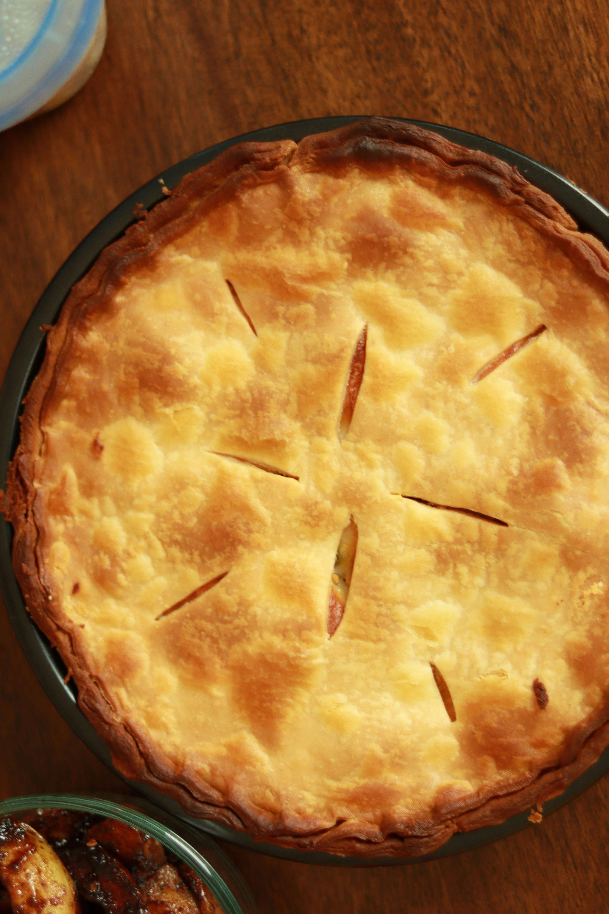

Torta de Frago
A melhor receita de Tapioca que você já viu

Ingredientes
Para o Recheio
- 500 g de peito de frango sem pele
- 4 colheres (sopa) de óleo
- 1 cebola picada
- 1/2 litro de caldo de galinha
- 1 dente de alho amassado
- sal a gosto
Para a Massa
- 250 ml de leite
- 2 ovos
- sal a gosto
- queijo ralado a gosto
- 3/4 de xícara (chá) de óleo
- 1 e 1/2 xícara (chá) de farinha de trigo
- 1 colher (sopa) de fermento em pó